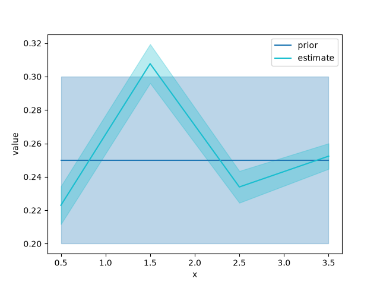

A First Problem#
This page solves one small problem from start to finish, meeting fips’s objects in the order you use them: the labels and values of a vector, the forward operator, the covariances, the problem, and its posterior. The words (state, observation, forward operator, prior, …) are defined once in Terminology.
A first problem#
Six rays cross a line of four cells, and each ray’s travel time is measured. A ray’s time is the sum, over the cells it crosses, of its length in the cell times the cell’s slowness (the inverse of a speed). The state is the slowness of the four cells; the observations are the six times; the forward operator holds the lengths. We know roughly what the slowness is (the prior: 0.25 s/km everywhere, give or take 0.05) and how well the times are measured (to 0.01 s).
Labels and vectors#
fips keeps the labels of your data beside the numbers and matches everything
by label, never by position. The labels of a state or of the observations are
a Space: named blocks, each labeled by its own pandas index. A
Vector is values on a space. A pandas Series you already have
becomes a vector of one block with Vector.from_series:
In [1]: import numpy as np
In [2]: import pandas as pd
In [3]: import fips
In [4]: cells = pd.Index([0.5, 1.5, 2.5, 3.5], name="x") # where each cell is, km
In [5]: prior = fips.Vector.from_series(pd.Series(0.25, index=cells, name="prior"), block="slowness")
In [6]: prior.space
Out[6]: Space(slowness: 4 x ['x'])
In [7]: rays = pd.Index([1, 2, 3, 4, 5, 6], name="ray")
In [8]: times = pd.Series([0.53, 0.76, 1.02, 0.25, 0.48, 0.80], index=rays)
In [9]: obs = fips.Vector.from_series(times, block="time")
In [10]: obs.to_series()
Out[10]:
block ray
time 1 0.53
2 0.76
3 1.02
4 0.25
5 0.48
6 0.80
dtype: float64
A vector is read-only, and to_series() gives it back to
pandas, with a block level first.
The forward operator#
The forward operator maps a state to the observations it would produce. In
fips it is an Operator: a matrix with a space on each axis, the
observations’ on its rows and the state’s on its columns. A labeled DataFrame
becomes one with Operator.from_frame, which
names the block of each axis:
In [11]: lengths = pd.DataFrame(
....: [[1, 1, 0, 0], [1, 1, 1, 0], [1, 1, 1, 1], [0, 0, 0, 1], [0, 0, 1, 1], [0, 1, 1, 1]],
....: index=rays,
....: columns=cells,
....: dtype=float,
....: )
....:
In [12]: forward = fips.Operator.from_frame(lengths, row_block="time", col_block="slowness")
In [13]: (forward @ prior).to_series()
Out[13]:
block ray
time 1 0.50
2 0.75
3 1.00
4 0.25
5 0.50
6 0.75
dtype: float64
forward @ prior is the travel times the prior predicts, a vector on the
observations’ space. A product checks the labels it meets on: the columns of
forward and the labels of prior must be the same, in any order.
Covariances#
A covariance says how far a vector may be off, and how its errors go
together. Independent errors with one standard deviation are a diagonal, which
Independent writes down. Errors that are alike for nearby
cells are a correlation model times standard deviations: here
Exponential correlates two cells by their distance along x,
over 1 km. with_std turns a correlation model into a covariance model:
In [14]: obs_cov = fips.Independent().with_std(0.01)
In [15]: prior_cov = fips.Exponential("x", 1.0).with_std(0.05)
In [16]: prior_cov.build(prior.space).dense().round(5)
Out[16]:
array([[0.0025 , 0.00092, 0.00034, 0.00012],
[0.00092, 0.0025 , 0.00092, 0.00034],
[0.00034, 0.00092, 0.0025 , 0.00092],
[0.00012, 0.00034, 0.00092, 0.0025 ]])
A covariance model is a covariance waiting for its labels: build puts it on
a space and gives a Covariance. You rarely call it yourself,
since a problem builds its covariance models on the prior’s and the
observations’ spaces. Covariance models in the User Guide has the other
kernels, Kronecker products and correlations within groups.
The problem#
A Problem puts the inputs together and checks their labels once:
the forward operator, the covariances and the offset must have exactly the
labels of the observations or of the prior, in any order:
In [17]: problem = fips.Problem(
....: prior=prior, prior_cov=prior_cov, obs=obs, obs_cov=obs_cov, forward=forward
....: )
....:
In [18]: problem.predict(problem.prior).to_series()
Out[18]:
block ray
time 1 0.50
2 0.75
3 1.00
4 0.25
5 0.50
6 0.75
dtype: float64
predict() is \(H x + c\) for any state. A label on one
side only is an error that names it, so a typo or a missing row cannot be
filled in silently:
In [19]: five_rays = fips.Operator.from_frame(lengths.iloc[:5], row_block="time", col_block="slowness")
In [20]: try:
....: fips.Problem(prior, prior_cov, obs, obs_cov, five_rays)
....: except ValueError as error:
....: print(error)
....:
The rows of forward and the observations do not have the same labels: labels of block 'time' missing from the rows of forward: 6.
Solving#
fips.solve() solves the problem and returns its
Posterior; the problem itself is not changed. The posterior has
the estimate, on the prior’s labels, and its uncertainty:
In [21]: post = fips.solve(problem)
In [22]: post.estimate.to_series().round(3)
Out[22]:
block x
slowness 0.5 0.223
1.5 0.308
2.5 0.234
3.5 0.252
Name: estimate, dtype: float64
In [23]: post.variances.to_series().pow(0.5).round(4)
Out[23]:
block x
slowness 0.5 0.0113
1.5 0.0117
2.5 0.0095
3.5 0.0076
Name: variance, dtype: float64
In [24]: post.cov().to_frame().round(6)
Out[24]:
block slowness
x 0.5 1.5 2.5 3.5
block x
slowness 0.5 0.000129 -0.000102 -0.000004 0.000022
1.5 -0.000102 0.000136 -0.000041 -0.000012
2.5 -0.000004 -0.000041 0.000090 -0.000045
3.5 0.000022 -0.000012 -0.000045 0.000058
Nothing larger than the observations is formed until you ask for it: the
estimate and the variances come from a factorization of an \(m \times m\)
matrix, and post.cov() forms the \(n \times n\) covariance only when it
is read. The diagnostics of the solve are attributes, and
summary() gives them as one row:
In [25]: post.dofs
Out[25]: 3.730423119548721
In [26]: post.reduced_chi2
Out[26]: 0.7008648058617578
In [27]: post.summary()
Out[27]:
gamma n_state n_obs ... r2 rmse uncertainty_reduction
0 1.0 4 6 ... 0.999798 0.004321 0.79668
[1 rows x 9 columns]
The method is "analytic" by default, and its one option is the
regularization factor gamma (the solve uses \(S_z / \gamma\)).
with_gamma() gives another gamma’s posterior from the same
factorization, without solving again:
In [28]: fips.solve(problem, gamma=4.0).options
Out[28]: AnalyticOptions(gamma=4.0)
In [29]: post.with_gamma(4.0).dofs
Out[29]: 3.924866834535852
A second block#
The rays were timed by two instruments whose clocks may each be off by a
delay. The delays are unknown too, so they are a second block of the state.
Vector.from_blocks puts blocks together, each
with its own labels:
In [30]: instruments = pd.Index(["east", "west"], name="instrument")
In [31]: prior2 = fips.Vector.from_blocks(
....: {"slowness": pd.Series(0.25, index=cells), "delay": pd.Series(0.0, index=instruments)}
....: )
....:
In [32]: prior2.space
Out[32]: Space(slowness: 4 x ['x'], delay: 2 x ['instrument'])
The forward operator is built from its blocks, each named by the observation
block it maps to and the state block it maps from, and placed on the spaces by
its labels (Operator.from_blocks); a pair
of blocks left out is zero. Rays 1 to 3 were timed east, 4 to 6 west:
In [33]: timer = pd.DataFrame(
....: [[1, 0], [1, 0], [1, 0], [0, 1], [0, 1], [0, 1]],
....: index=rays,
....: columns=instruments,
....: dtype=float,
....: )
....:
In [34]: forward2 = fips.Operator.from_blocks(
....: {("time", "slowness"): lengths, ("time", "delay"): timer},
....: rows=obs.space,
....: cols=prior2.space,
....: )
....:
The prior covariance has a part for each block, independent of each other:
Covariance.block_diag takes them by block
name:
In [35]: prior_cov2 = fips.Covariance.block_diag(
....: slowness=fips.Exponential("x", 1.0).with_std(0.05),
....: delay=fips.Independent().with_std(0.02),
....: )
....:
In [36]: post2 = fips.solve(fips.Problem(prior2, prior_cov2, obs, obs_cov, forward2))
In [37]: post2.estimate["delay"].to_series().round(3)
Out[37]:
block instrument
delay east -0.008
west -0.004
Name: estimate, dtype: float64
post2.estimate["delay"] reads one block by name, as a vector of its own.
The posterior of a total#
Often the question is about an aggregate of the state: the mean slowness of
each half of the line, a regional total, a monthly mean. An aggregation
\(W\) (fips.aggregate) groups the labels of a space;
post.cov(W) is the posterior covariance of the aggregates, computed without
the full covariance:
In [38]: halves = pd.Series(["near", "near", "far", "far"], index=cells, name="half")
In [39]: W = fips.aggregate.mean(prior2.space, by=halves, blocks="slowness")
In [40]: (W @ post2.estimate).to_series().round(3)
Out[40]:
block half instrument
slowness far nan 0.244
near nan 0.269
delay nan east -0.008
west -0.004
dtype: float64
In [41]: post2.cov(W)["slowness", "slowness"].to_frame().round(6)
Out[41]:
block slowness
half far near
block half
slowness far 0.000033 -0.000015
near -0.000015 0.000101
Plotting#
fips draws one plot, plot_comparison() (it needs the
viz extra): several vectors on one axes, with a band of one standard
deviation from each covariance. Anything else is drawn from
to_series() or to_xarray() with pandas or
xarray.
In [42]: from fips.visualization import plot_comparison
In [43]: fig, ax = plot_comparison(
....: problem.prior,
....: post.estimate,
....: errors=[problem.prior_cov, post.cov()],
....: )
....:


What’s next#
User Guide, the User Guide: each object in more depth, covariance models, sparse matrices, offsets, aggregated observations, part of the state held at its prior, and repeated inversions.
Examples: two worked problems, gravity and a regional flux inversion.
API Reference: every class, function and attribute.